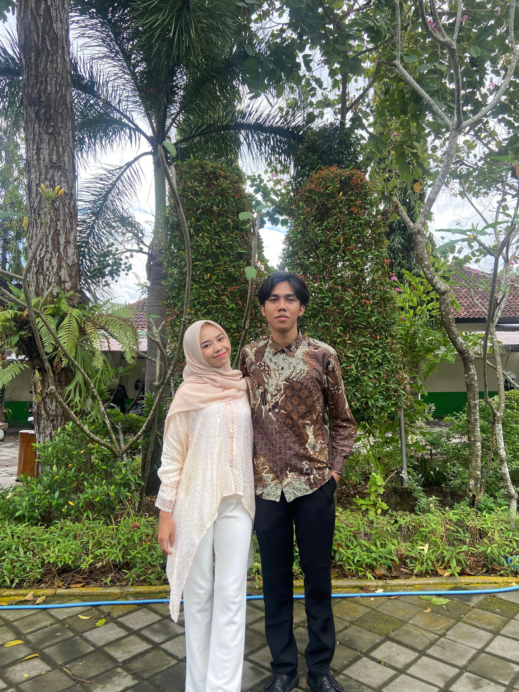
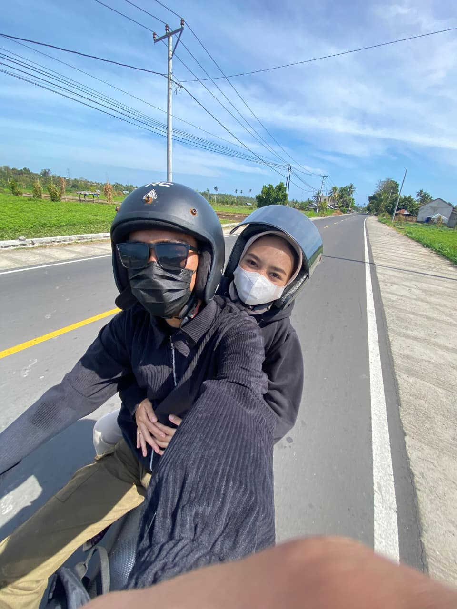
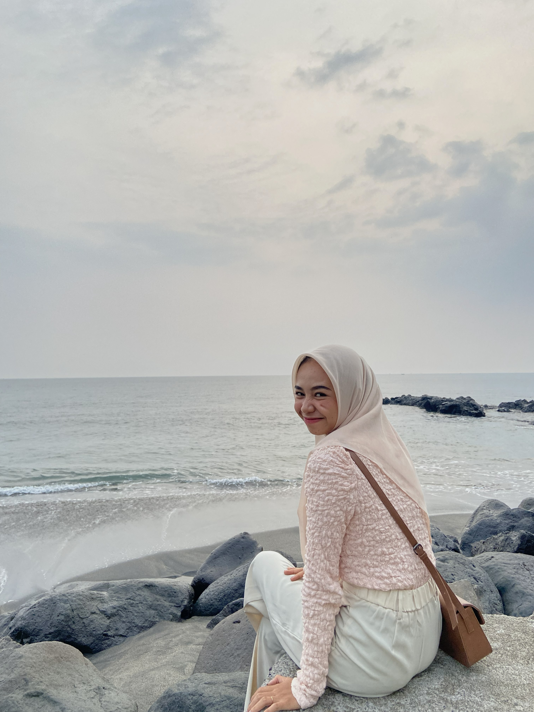
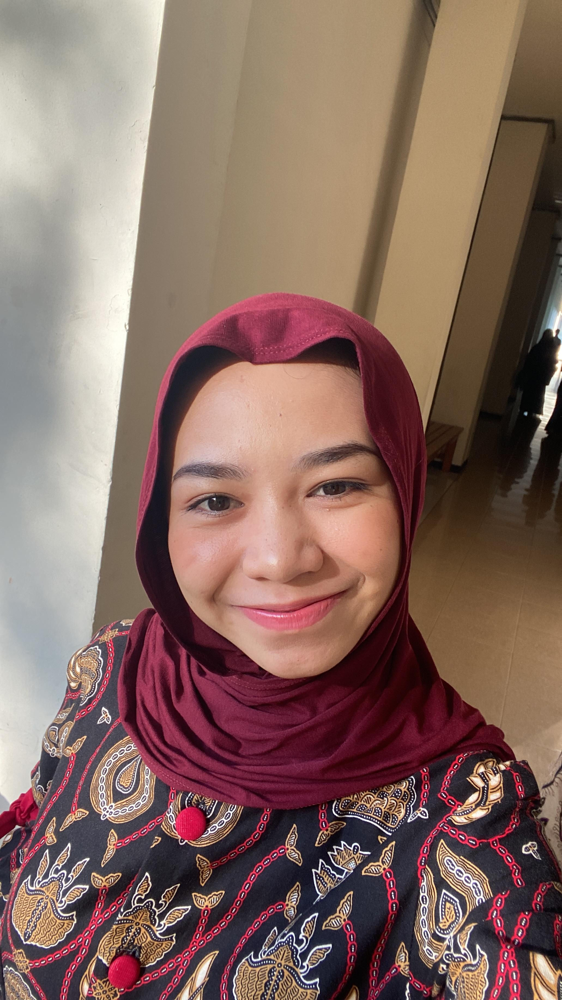
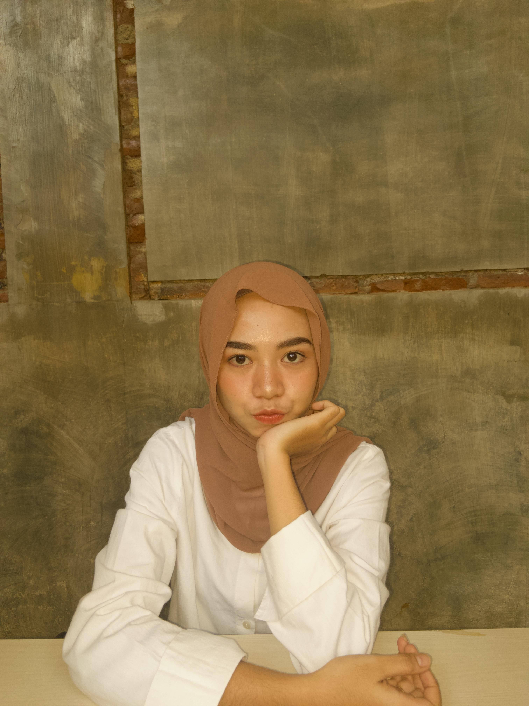
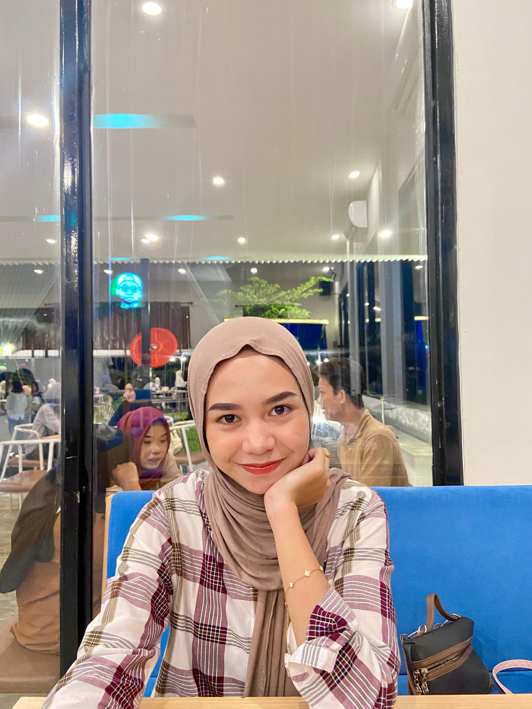
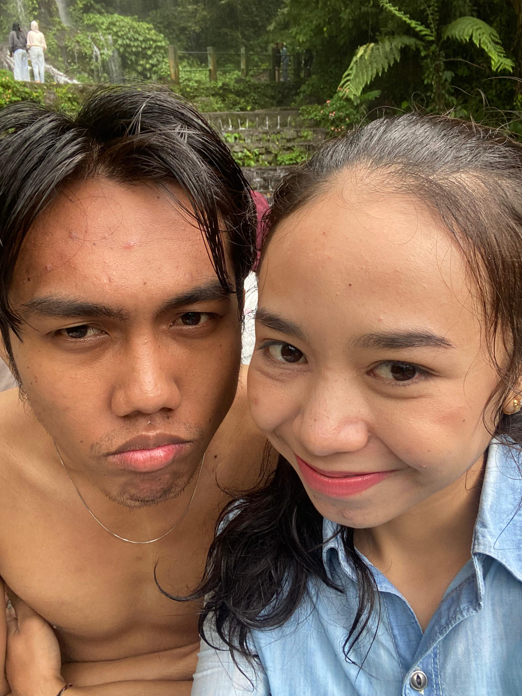
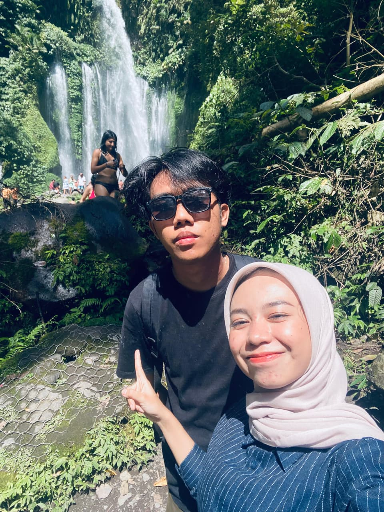

Ada dongeng yang tidak dimulai dengan 'Pada suatu masa', tapi dengan 'Pada suatu hari di sebuah pesta'.
Di antara riuh tawa dan denting gelas, ada cerita yang lahir diam-diam. Bukan dari buku, tapi dari sepasang mata yang tanpa sadar mengubah segalanya.
Dongeng itu tentang sepatu kaca dan kereta labu. Kisah ini tentang pertemuan sederhana yang terasa seperti keajaiban. Tentang seorang gadis yang tidak menyadari bahwa ia adalah tokoh utama dalam cerita seseorang.
Dan gadis itu benar-benar ada. Namanya Wulan.
Sebuah pesta pernikahan keluarga. Seharusnya hari itu biasa saja. Tapi di antara semua tamu dan dekorasi, ada satu hal yang membuat hari itu berbeda. Di sanalah, tanpa rencana, bab pertama dari cerita ini dimulai.

Bukan tentang gaun yang ia kenakan atau cara ia menata rambut. Ada sesuatu dalam tenangnya, dalam caranya tersenyum saat kami bertukar pandang. Sebuah kehangatan sederhana yang membuat sudut ruangan yang ramai terasa sunyi untuk sesaat.

Cinderella dikenal karena kebaikan hatinya, bukan mahkotanya. Wulan juga begitu. Ia membawa keajaiban ke dalam momen-momen biasa, mengubah hari yang kelabu menjadi lebih berwarna hanya dengan kehadirannya. Ia adalah dongeng yang menjadi nyata.

Seandainya aku bisa mengumpulkan semua harapan baik di dunia, aku akan menyimpannya di dalam kotak ini. Setiap bunga yang keluar adalah doa: untuk senyummu, untuk langkahmu, untuk setiap hari yang akan kau jalani.
Beberapa momen terlalu berharga untuk dilupakan. Ini adalah kepingan-kepingan waktu yang aku simpan, di mana setiap gambar memiliki ceritanya sendiri.





Orang bilang dongeng Cinderella dimulai di sebuah pesta dansa kerajaan. Mungkin, pesta dansa kita dimulai di sebuah acara pernikahan keluarga, hari di mana aku pertama kali melihatmu. Aku tidak tahu apa yang terjadi setelah itu, yang kutahu hanyalah duniaku menjadi sedikit lebih terang.
Kamu mungkin tidak pernah menyadarinya, tapi caramu membawa diri, caramu berbicara, dan ketenangan yang kamu bawa, semuanya meninggalkan jejak. Jejak yang membuatku berharap semoga cerita ini tidak berhenti di sini.
Aku tidak tahu di mana akhir dari cerita ini. Tapi jika suatu hari nanti kita bisa membaca halaman ini bersama sambil tersenyum, mungkin itu saja sudah menjadi akhir yang indah.